<h1>Wisconsin Counties</h1><table><tr><td><a #Adams>Adams</a></td></tr><tr><td><a #Ashland>Ashland</a></td></tr><tr><td><a #Barron>Barron</a></td></tr><tr><td><a #Bayfield>Bayfield</a></td></tr><tr><td><a #Brown>Brown</a>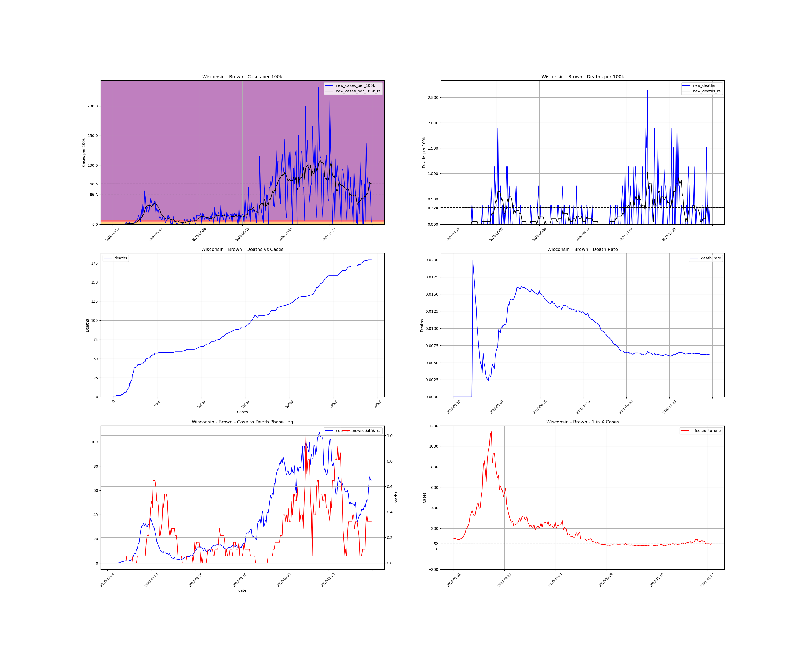</td></tr><tr><td><a #Buffalo>Buffalo</a></td></tr><tr><td><a #Burnett>Burnett</a></td></tr><tr><td><a #Calumet>Calumet</a></td></tr><tr><td><a #Chippewa>Chippewa</a></td></tr><tr><td><a #Clark>Clark</a></td></tr><tr><td><a #Columbia>Columbia</a></td></tr><tr><td><a #Crawford>Crawford</a></td></tr><tr><td><a #Dane>Dane</a></td></tr><tr><td><a #Dodge>Dodge</a></td></tr><tr><td><a #Door>Door</a>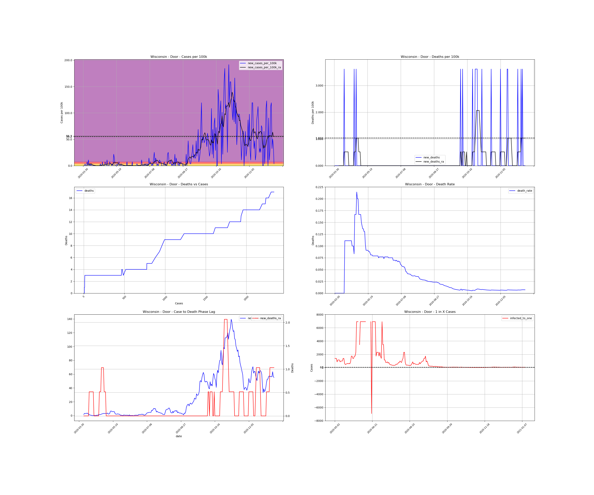</td></tr><tr><td><a #Douglas>Douglas</a></td></tr><tr><td><a #Dunn>Dunn</a></td></tr><tr><td><a #Eau Claire>Eau Claire</a></td></tr><tr><td><a #Florence>Florence</a></td></tr><tr><td><a #Fond du Lac>Fond du Lac</a></td></tr><tr><td><a #Forest>Forest</a></td></tr><tr><td><a #Grant>Grant</a></td></tr><tr><td><a #Green>Green</a></td></tr><tr><td><a #Green Lake>Green Lake</a></td></tr><tr><td><a #Iowa>Iowa</a></td></tr><tr><td><a #Iron>Iron</a></td></tr><tr><td><a #Jackson>Jackson</a></td></tr><tr><td><a #Jefferson>Jefferson</a>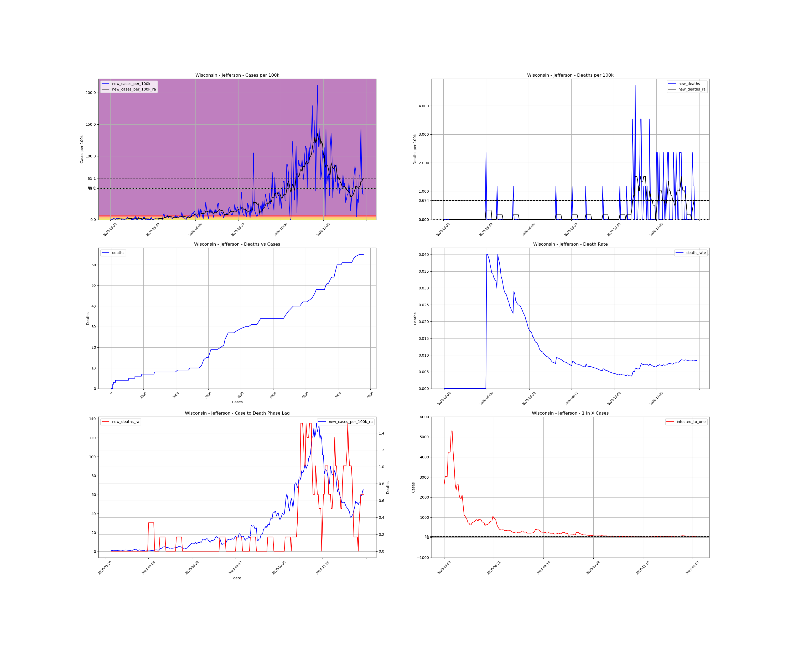</td></tr><tr><td><a #Juneau>Juneau</a>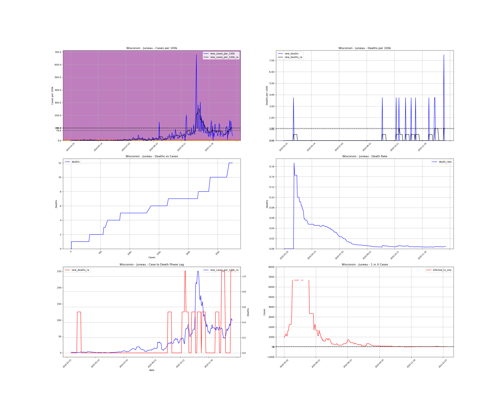</td></tr><tr><td><a #Kenosha>Kenosha</a></td></tr><tr><td><a #Kewaunee>Kewaunee</a></td></tr><tr><td><a #La Crosse>La Crosse</a></td></tr><tr><td><a #Lafayette>Lafayette</a></td></tr><tr><td><a #Langlade>Langlade</a></td></tr><tr><td><a #Lincoln>Lincoln</a></td></tr><tr><td><a #Manitowoc>Manitowoc</a></td></tr><tr><td><a #Marathon>Marathon</a>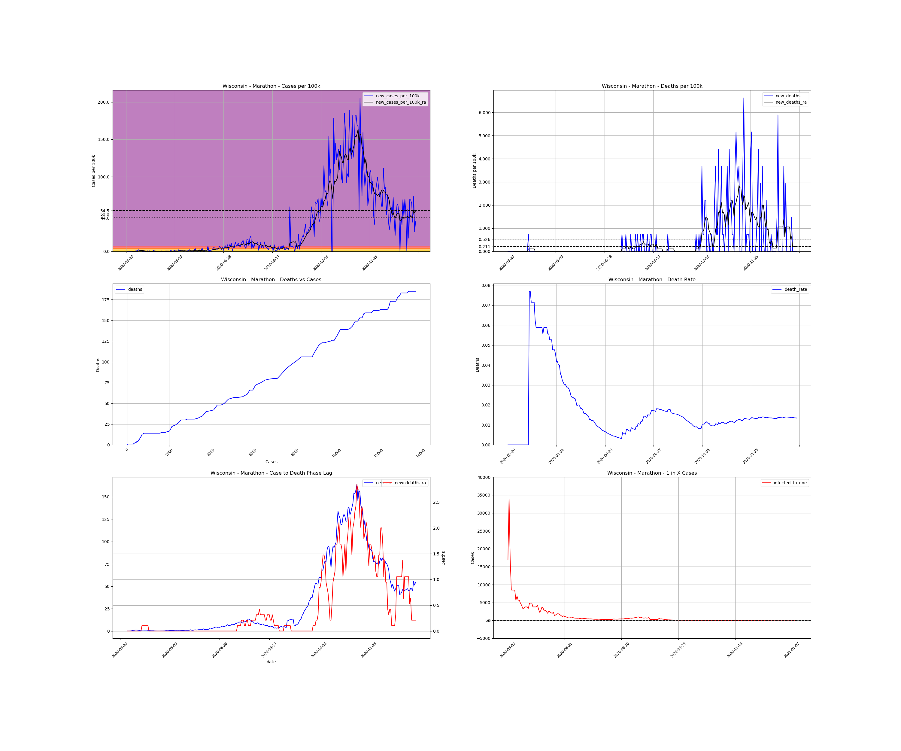</td></tr><tr><td><a #Marinette>Marinette</a></td></tr><tr><td><a #Marquette>Marquette</a>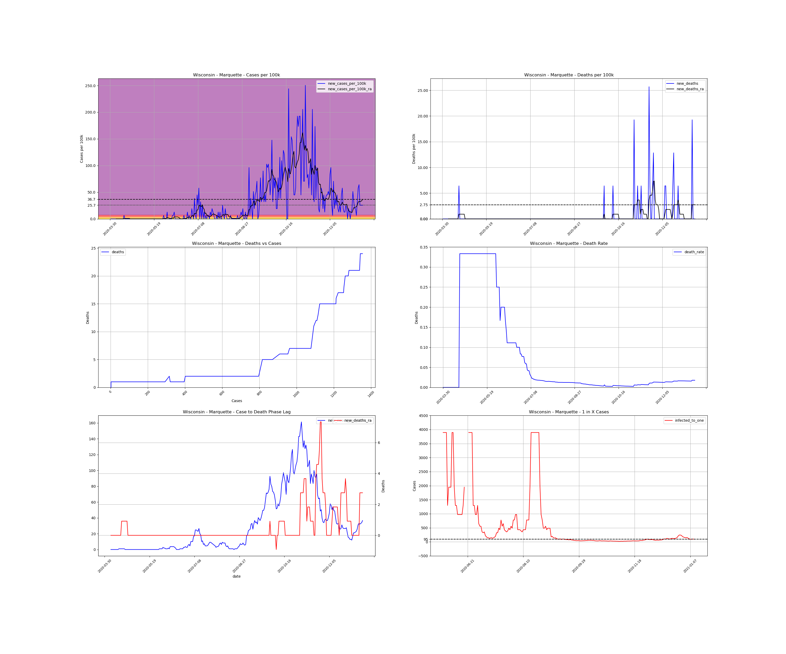</td></tr><tr><td><a #Menominee>Menominee</a>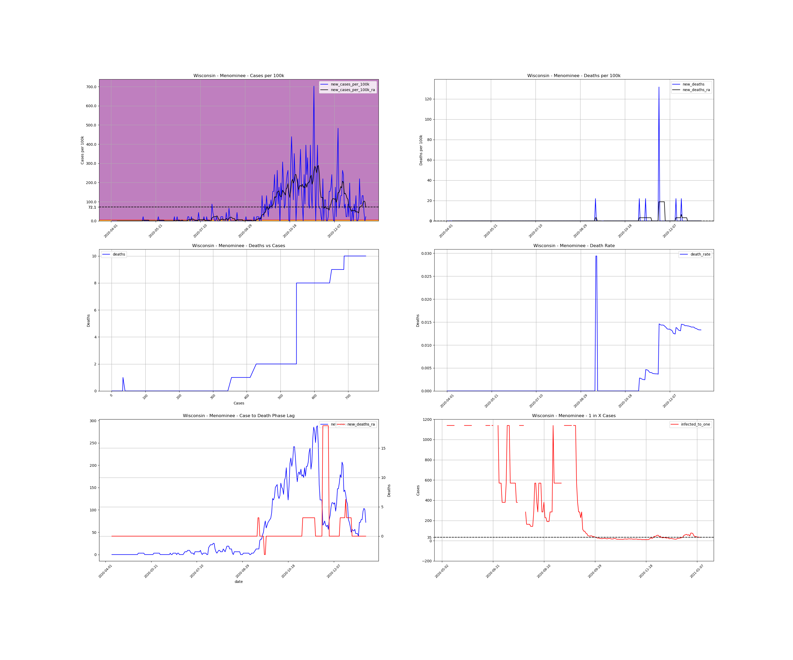</td></tr><tr><td><a #Milwaukee>Milwaukee</a></td></tr><tr><td><a #Monroe>Monroe</a></td></tr><tr><td><a #Oconto>Oconto</a></td></tr><tr><td><a #Oneida>Oneida</a></td></tr><tr><td><a #Outagamie>Outagamie</a></td></tr><tr><td><a #Ozaukee>Ozaukee</a></td></tr><tr><td><a #Pepin>Pepin</a></td></tr><tr><td><a #Pierce>Pierce</a></td></tr><tr><td><a #Polk>Polk</a></td></tr><tr><td><a #Portage>Portage</a></td></tr><tr><td><a #Price>Price</a></td></tr><tr><td><a #Racine>Racine</a></td></tr><tr><td><a #Richland>Richland</a></td></tr><tr><td><a #Rock>Rock</a></td></tr><tr><td><a #Rusk>Rusk</a>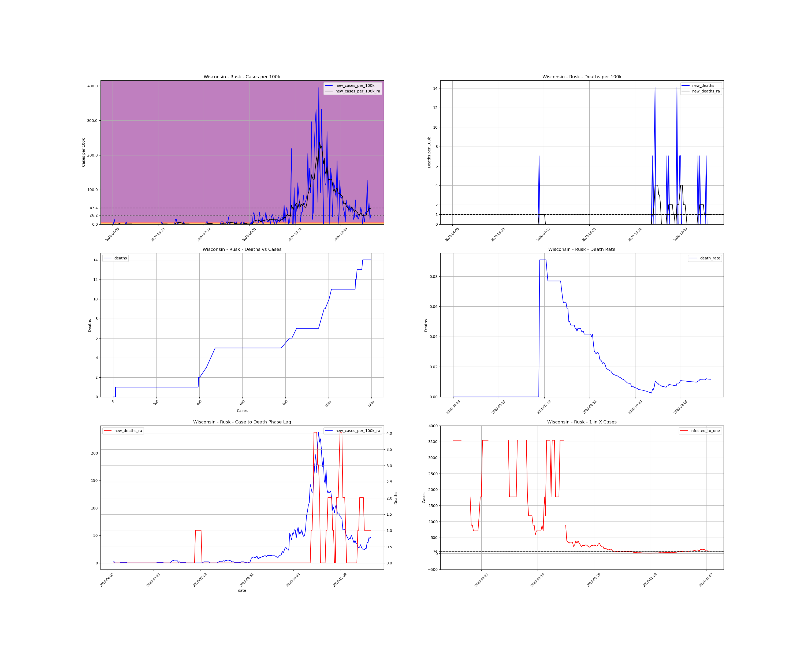</td></tr><tr><td><a #Sauk>Sauk</a>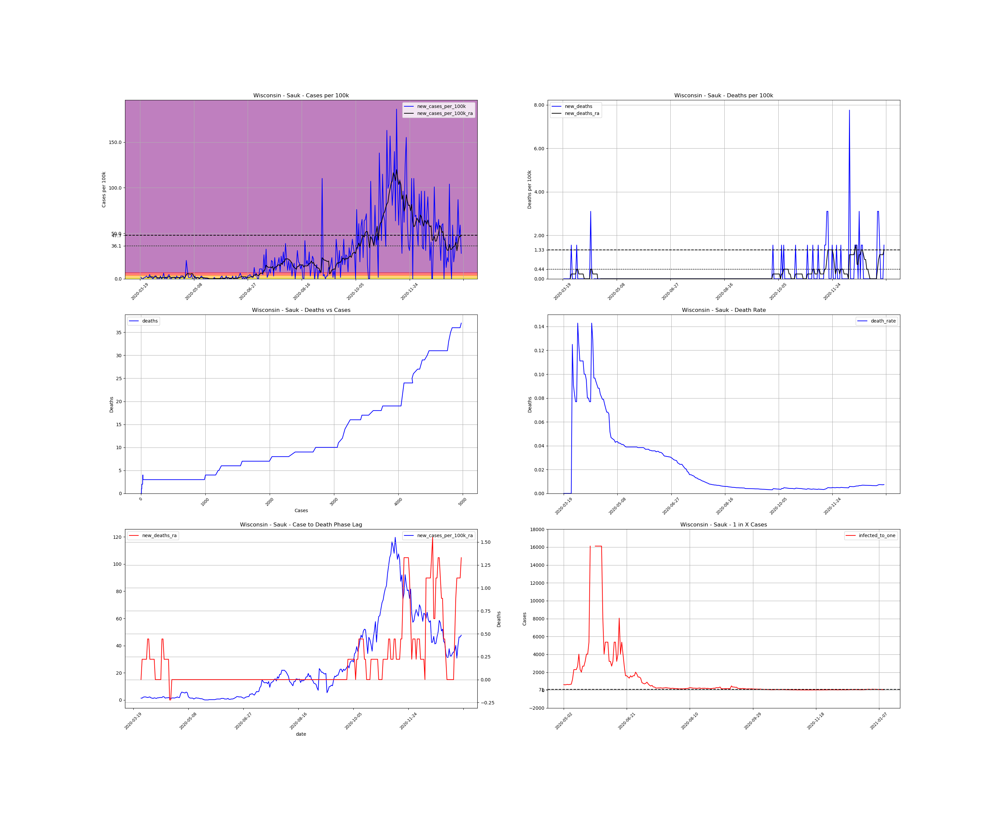</td></tr><tr><td><a #Sawyer>Sawyer</a>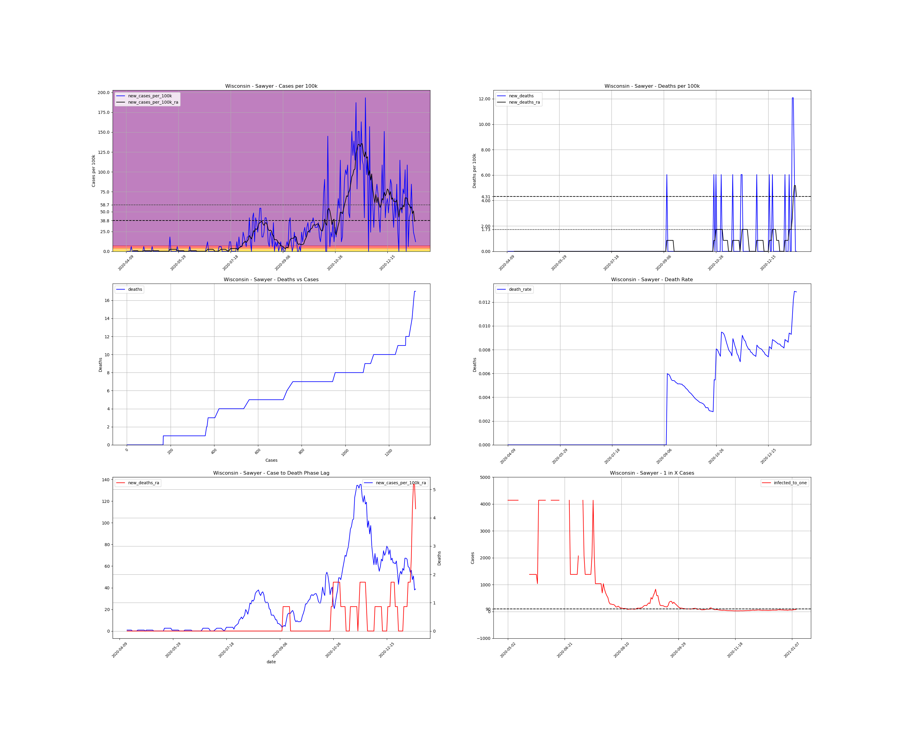</td></tr><tr><td><a #Shawano>Shawano</a></td></tr><tr><td><a #Sheboygan>Sheboygan</a></td></tr><tr><td><a #St. Croix>St. Croix</a></td></tr><tr><td><a #Taylor>Taylor</a></td></tr><tr><td><a #Trempealeau>Trempealeau</a></td></tr><tr><td><a #Vernon>Vernon</a></td></tr><tr><td><a #Vilas>Vilas</a></td></tr><tr><td><a #Walworth>Walworth</a></td></tr><tr><td><a #Washburn>Washburn</a></td></tr><tr><td><a #Washington>Washington</a></td></tr><tr><td><a #Waukesha>Waukesha</a></td></tr><tr><td><a #Waupaca>Waupaca</a>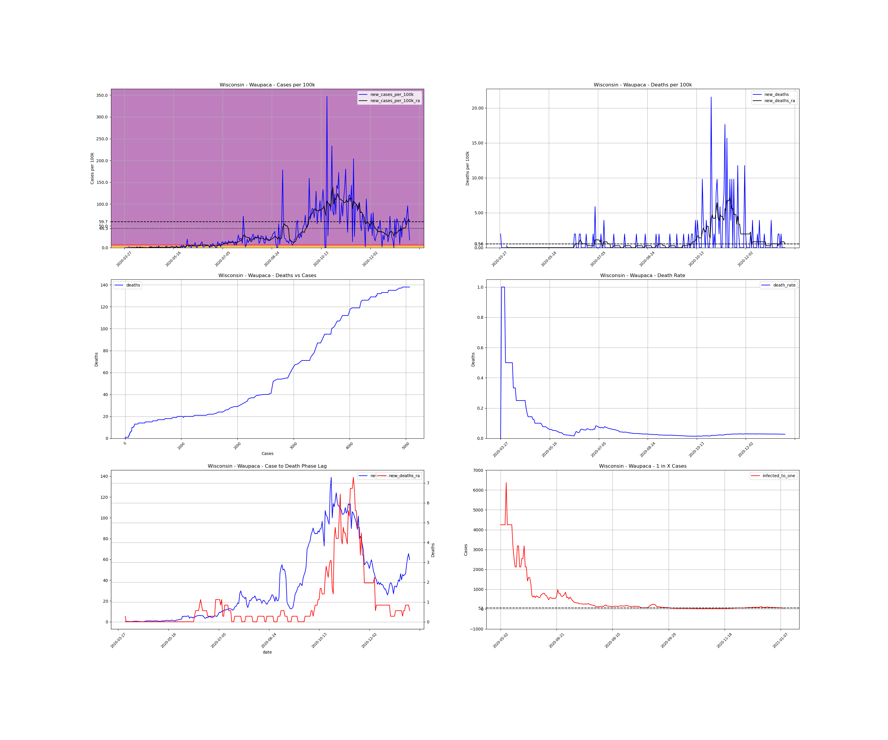</td></tr><tr><td><a #Waushara>Waushara</a></td></tr><tr><td><a #Winnebago>Winnebago</a>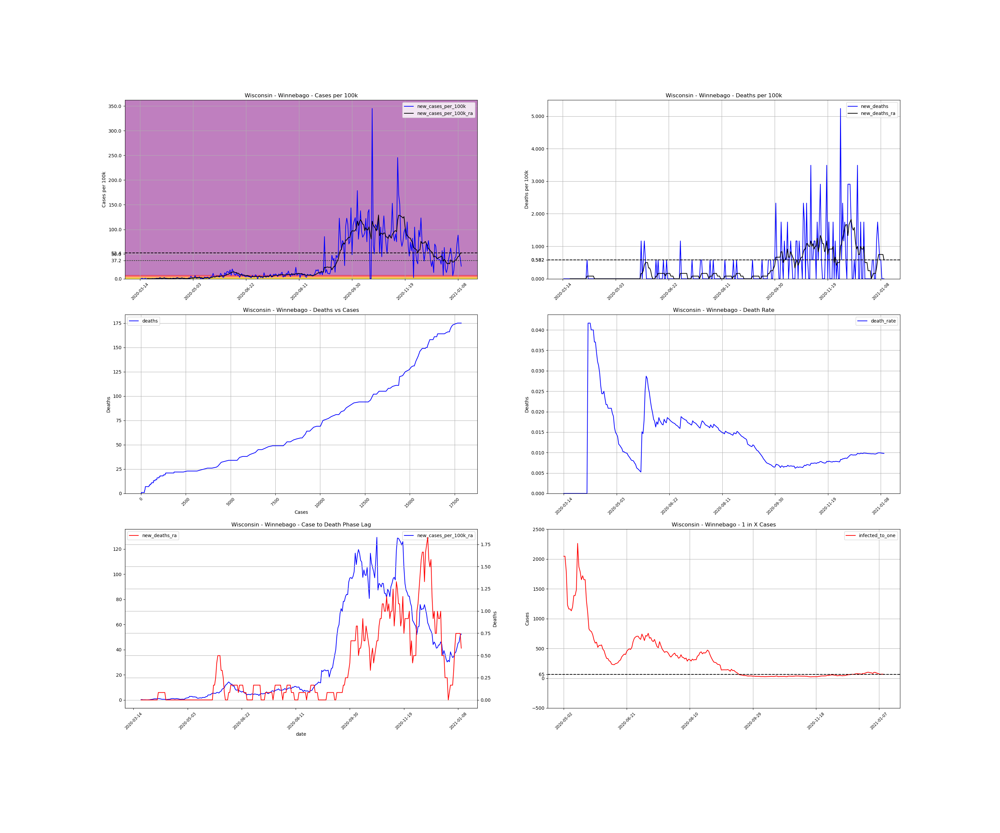</td></tr><tr><td><a #Wood>Wood</a></td></tr></table>